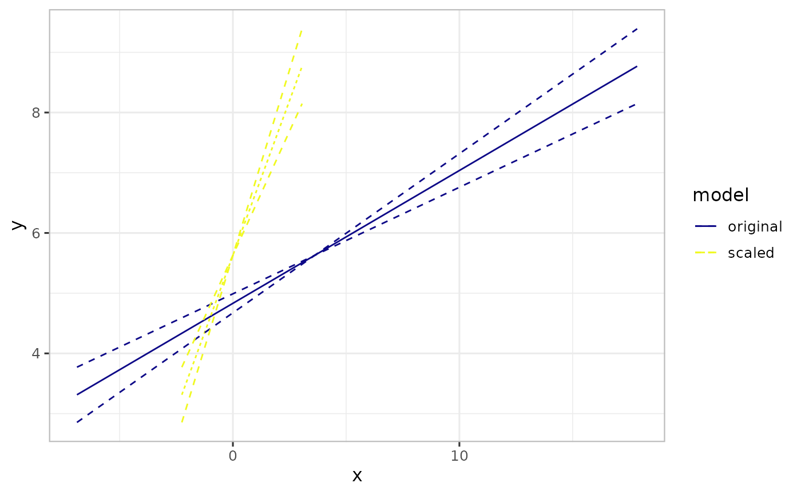

Outcome plots
plot.varpred.RdPlot varpred object.
Usage
# S3 method for varpred
plot(
x,
...,
xlabs = NULL,
ylabs = NULL,
xtrans_fun = NULL,
pos = 0.5,
ci = TRUE,
facet_scales = "fixed",
facet_ncol = NULL
)Arguments
- x
varpredobject.- ...
for future implementations.
- xlabs
x-axis label. If
NULL, default,x.varis used.- ylabs
y-axis label. If
NULL, default, the response label is used.- xtrans_fun
function to transform x values to the original or other scales. Useful when x was transformed prior to model fitting. See examples.
- pos
spacing between labels of categorical variable on the plot.
- ci
logical. If
TRUE(default), the confidence intervals (indicating prediction or effect) are plotted, otherwise, only the central estimate is plotted.- facet_scales
should scales be fixed ("fixed", the default), free ("free"), or free in one dimension ("free_x", "free_y")?
- facet_ncol
number of facet columns.
Value
a ggplot object.
Examples
set.seed(4567)
N <- 100
x <- rnorm(N, 3, 5)
y <- 5 + 0.2*x + rnorm(N)
df <- data.frame(y = y, x = x)
m1 <- lm(y ~ x, df)
pred1 <- varpred(m1, "x", modelname="original")
plot(pred1)
## We can transform the predictor, fit the model and then
## back-transform the predictions in the plot
backtfun <- function(x, m, s) {
x <- m + x*s
return(x)
}
x_scaled <- scale(df$x)
m <- attr(x_scaled, "scaled:center")
s <- attr(x_scaled, "scaled:scale")
df$x <- as.vector(x_scaled)
m2 <- lm(y ~ x, df)
pred2 <- varpred(m2, "x", modelname="scaled")
# Compare the predictions
combinevarpred(list(pred1, pred2), plotit=TRUE)

# Display focal predictor on the original scale
plot(pred2, xtrans_fun=function(x)backtfun(x, m=m, s=s))